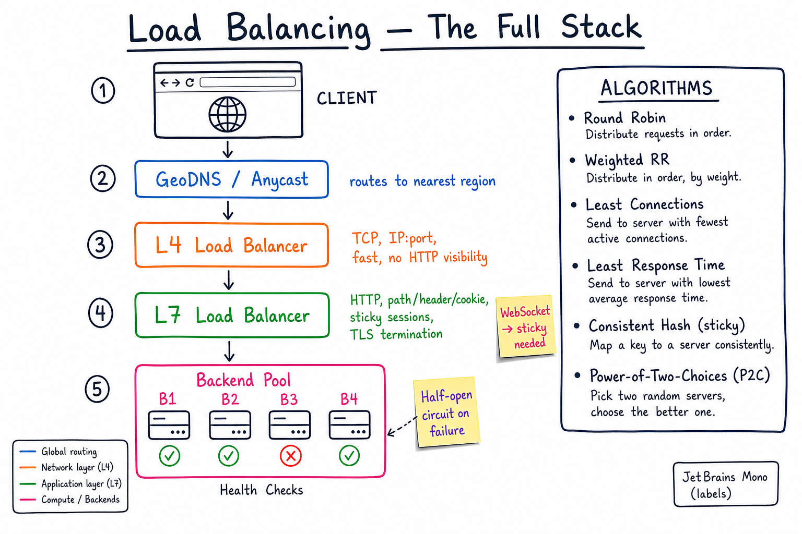

Load Balancing // Concept
Spread traffic across instances; survive instance failure. The LB is the most-touched component in a distributed system — every request goes through one. Five layers (DNS → anycast → L4 → L7 → client) and seven algorithms compose the full stack.

Full LB stack from DNS → GeoDNS/Anycast → L4 → L7 → backend pool, plus the 6 main scheduling algorithms.
01 — What Problem It Solves
WITHOUT LB:
Client --> Server (single)
- Single point of failure.
- Limited to one box's capacity.
- Deploys are downtime.
WITH LB:
Client --> LB --> { Server1, Server2, Server3, ... ServerN }
- LB picks one healthy backend per request.
- Scale horizontally by adding more backends.
- Roll deploys, drain one at a time.
- Survive instance death (health check + automatic remove).
Three concerns mash up: (a) which backend (algorithm), (b) at what layer (L4/L7/DNS), (c) how to detect failures (health checks). Get all three right and the LB disappears.
01a — Core Vocabulary
| Term | Meaning |
|---|---|
| L4 (transport) | Routes by TCP/UDP 5-tuple (src/dst IP+port). Doesn't peek into HTTP. |
| L7 (application) | Routes by HTTP path, header, cookie, host. Terminates TLS. |
| DNS-based LB | Multiple A records or GeoDNS. Cheap, slow to converge (TTL). |
| Anycast IP | Same IP advertised from many points; BGP routes user to nearest. |
| Sticky session | Repeat requests from one client land on the same backend (cookie or consistent hash). |
| Health check | Active probe (TCP / HTTP /healthz) or passive (count failed requests). |
| TLS termination | LB decrypts TLS; talks plain HTTP to backends. Saves CPU on backends. |
| Connection draining | Stop sending new connections; let in-flight finish; remove backend. |
| Bounded queue / circuit | LB drops or fails fast when backend is over capacity. |
| Service mesh | Sidecar (Envoy) does LB per pod; no central LB. |
02 — Approaches (Where the LB Sits)
| Approach | How | Pros / Cons |
|---|---|---|
| DNS round-robin | Multiple A records per hostname; client picks one | Cheapest. Slow propagation (TTL), no health-aware routing, client caches stale IPs. |
| L4 LB | NLB / IPVS / HAProxy in TCP mode | Fast, simple, lower CPU. No HTTP awareness → can't route by path. |
| L7 LB | ALB / nginx / HAProxy HTTP / Envoy | Routing rules, TLS termination, retries, observability. ~10% more latency than L4. |
| Client-side LB | Client library picks a backend (gRPC, Finagle) | No LB hop = lower latency. Needs a registry (Consul, etcd). Harder to evolve. |
| Service mesh (Envoy sidecar) | One Envoy per pod intercepts traffic | Per-request smart LB (P2C, retries, mTLS) without app changes. Ops cost. |
| Anycast + L4 + L7 chain | The big-cloud pattern: anycast IP → nearest PoP → L4 → L7 → backend | Best-in-class for global low-latency. Cloudflare, AWS Global Accelerator. |
03 — Diagram
Diagram above shows the canonical stack. Most production systems use a chain: GeoDNS or anycast for region selection → L4 NLB for raw TCP → L7 ALB for HTTP-level routing + TLS termination → backend pool.
04 — L4 vs L7 Tradeoffs
| L4 | L7 | |
|---|---|---|
| Sees | IP+port, TCP/UDP | HTTP method, path, headers, cookies, body |
| Speed | Wire-rate, <1ms add | ~1-3ms add for parse + rules |
| Routing rules | By port only | By path (/api/*), host (api.x.com), header (x-version) |
| Sticky | By source IP (NAT-friendly issues) | By cookie (clean) |
| TLS | Pass-through | Terminate (offload from backend) |
| WebSocket | Works (TCP) | Works (Upgrade handled, sticky required) |
| Retry on failure | Can't (TCP already opened) | Can retry idempotent HTTP |
| Use when | Custom protocols, raw TCP, gaming, gRPC streaming | HTTP services, multi-tenant, A/B testing, canary |
Common production pattern: L4 in front of L7. L4 (NLB) gives you a stable IP and handles raw TCP; L7 (ALB/nginx) handles HTTP-aware routing.
05 — Scheduling Algorithms
| Algorithm | How | When |
|---|---|---|
| Round-robin | Iterate backends in order | Equal-sized backends, similar request cost |
| Weighted RR | RR but each backend has a weight | Heterogeneous instance sizes |
| Least connections | Pick backend with fewest open conns | Long-lived connections (DBs, WebSocket) |
| Least response time | Pick lowest EWMA latency | Heterogeneous request cost |
| Consistent hashing | hash(client_key) → backend ring | Sticky cache (CDN, sharded cache). See consistent hashing. |
| Random | Pick uniformly at random | Baseline; surprisingly good at scale |
| Power of Two Choices (P2C) | Pick 2 random, choose the less loaded | Best general-purpose. Envoy default. Avoids "RR + slow node" trap. |
P2C beats both random and least-connections in practice — near-optimal load with O(1) cost and resilient to stale stats. "The power of two random choices: a survey of techniques" — Mitzenmacher.
06 — Sticky Sessions: When & Why
STICKY = same client → same backend on repeat requests.
When you NEED it:
- WebSocket (long-lived conn must keep mapping)
e.g. fb-live-comments.html (sticky by stream_id)
- In-process session state
- In-process cache warmth
- Collaborative editing
e.g. google-docs.html (sticky by docId)
Implementations:
- Cookie-based : LB sets cookie=backendID, reads on next req
- Source IP : hash(src_ip); breaks with NAT/mobile
- URL/header : hash(stream_id, docId); deterministic across LB restarts
- Consistent hash: best; survives backend churn
DOWNSIDE:
- Uneven load when one user is hot.
- Failover: when sticky backend dies, all those users re-shuffle to
a new one and bring their state (re-warm cache, re-establish WS).
Default should be stateless backend + no stickiness. Add stickiness only when there's a specific reason (WS, in-mem state).
07 — Health Checks
| Type | How | Pros / Cons |
|---|---|---|
| Active | LB polls /healthz every 5-10s; mark unhealthy after N fails | Predictable. Adds load. Fast detection (~10-30s). |
| Passive | Count failed real requests; eject backend after threshold (outlier detection) | No extra traffic. Detects symptom not cause. |
| Both (recommended) | Envoy / Istio default | Active for liveness, passive for partial brownouts. |
Half-open / circuit breaker: after ejecting a backend, periodically send 1 probe to see if it recovered before fully re-admitting.
What to put in /healthz:
- Process alive + initialized.
- (Optional, "deep") DB pool not exhausted, downstream reachable.
- Don't couple to deep dependencies → one DB blip = whole fleet ejected.
- Use a separate
/readyzfor "I'm warm" vs/healthzfor "I'm alive".
08 — Global Load Balancing
GeoDNS:
DNS resolver returns IPs of nearest region.
Pros: simple, no special infra.
Cons: DNS cached for TTL (often minutes), client may have wrong location
(mobile, VPN, public DNS like 8.8.8.8).
Anycast IP:
Same IP advertised from many BGP routers worldwide.
Client's packets routed to the topologically nearest PoP.
Used by: Cloudflare, Google, AWS Global Accelerator, Fastly.
Pros: sub-50ms regional convergence, instant failover.
Cons: requires BGP control / cloud product.
Multi-region failover:
Healthy ALB in us-east-1 + us-west-2.
Route53 health-checked failover record.
When east goes down, DNS flips to west after TTL.
09 — Blue-Green & Canary via LB
- Blue-Green: two identical pools (blue=current, green=new). LB sends 100% to blue. Deploy to green. Smoke-test. Flip LB to green. Roll back = flip back.
- Canary: route 1% → 5% → 25% → 100% to new version using L7 weight rules. Monitor error rate + latency. Roll back if SLO regresses.
- Shadow / mirror: send the request to both old and new; only old's response is returned. Used for risky migrations (read-only).
- Header-based routing:
X-Canary: true→ canary pool. Lets QA hit new build deterministically.
N-2 — Where It Shows Up
- FB Live comments — sticky by
stream_idfor WebSocket fan-out. - Uber — GeoIP routing to regional cells.
- Google Docs — sticky by
docIdso OT/CRDT state lives in one process. - WhatsApp — persistent connections per user; consistent hash.
- Stock exchange — L4 for ultra-low latency.
- CDN deep dive — LB at the edge.
- Envoy / service mesh
- Consistent hashing — the algorithm behind sticky LB.
- Backpressure — LB load shedding.
N-1 — Common Interview Probes
- "L4 or L7?" → HTTP routing rules / TLS terminate → L7. Raw TCP / wire speed → L4. Usually both, chained.
- "How would you handle WebSocket?" → sticky session, larger idle timeout, TCP_KEEPALIVE.
- "How does a failed backend get removed?" → health check + draining + remove from rotation.
- "What if the LB itself dies?" → LB pair in active-passive (VRRP/Keepalived) or active-active behind anycast IP.
- "How do you route between regions?" → GeoDNS or anycast.
- "Which algorithm by default?" → P2C or least-connections; round-robin only for homogeneous backends.
- "What about TLS?" → terminate at L7 LB, re-encrypt to backend or talk mTLS.
N — Interview Q&A
Why is round-robin a bad default?
It assumes all backends and all requests are equal. In reality, one backend GC-pauses or one request is a fat one — RR keeps shoving traffic at the slow node. P2C (pick 2 random, choose less loaded) is near-optimal and self-correcting.
L4 or L7 for a microservice gateway?
L7. You want path routing (/users/* → user-svc), TLS termination, retries on idempotent calls, request-level metrics. L4 doesn't see any of that. Some setups put a thin L4 (NLB) in front for a stable IP / faster TLS handshake offload, then L7 (ALB/Envoy) does the smart work.
How do sticky sessions interact with autoscaling?
Badly — scaling down evicts users from their sticky backend. Mitigation: drain connections (don't kill), short cookie TTL, externalize session state to Redis so stickiness is a perf optimization not a correctness requirement.
How does the LB know a backend is gone?
Active health check (poll /healthz every N seconds) and/or passive outlier detection (consecutive 5xx threshold). Mark unhealthy, stop sending traffic, then half-open probe to re-add. Typical detection: 5-30s.
Why is GeoDNS not enough for global LB?
(a) DNS caches per resolver TTL — failover takes minutes. (b) Client's resolver may be far from client (8.8.8.8). (c) Doesn't react to backend load. Anycast IP gives you BGP-level routing (instant), but you need cloud product (CloudFront, Cloudflare, Global Accelerator).
How do you do a zero-downtime deploy through a LB?
Rolling: take one backend out, drain in-flight, deploy, health-check, re-add, repeat. Or blue-green: bring up the new pool, smoke-test, flip the LB weight 100% to new, watch metrics, kill old. Canary: 1%→5%→25%→100% with auto-rollback on SLO regression.
How does P2C work and why is it good?
For each request, pick 2 backends uniformly at random; send to the one with lower current load (or fewer connections). Provably gets within log(log N) of optimal (vs N for random). Resilient to stale stats. Used by Envoy, Finagle, Yandex.
What's TLS termination and where should it happen?
Decrypt TLS at the LB so backends talk plain HTTP. Saves CPU per backend, centralizes cert mgmt, lets the L7 LB inspect headers. For zero-trust, re-encrypt LB→backend with mTLS (Envoy default). Don't terminate at every hop — double the crypto.
What if the LB is the bottleneck?
(a) Scale the LB — AWS ALB autoscales. (b) Add LB capacity via DNS RR / anycast in front. (c) Drop to L4 for lower CPU per req. (d) Use client-side LB / service mesh so there is no central LB.
How do you avoid the LB SPOF?
Run LB pairs in active-passive (VRRP heartbeat, IP failover) or active-active behind anycast. Cloud LBs (ALB/NLB) are themselves multi-AZ + autoscaled internally; the SPOF is the AZ, not the LB instance.
How does an LB help with rate limiting?
L7 LB enforces per-IP / per-API-key rate limits using a counter (in-memory or Redis). Returns 429 + Retry-After. Useful as the first defense layer before traffic reaches your backends. See rate limiting.
SDE-2 vs SDE-3 differentiator?
| SDE-2 | SDE-3 |
|---|---|
| Knows L4 vs L7, names round-robin and least-conn | Picks P2C, designs sticky strategy for WS, anycast vs GeoDNS, /healthz vs /readyz, TLS termination + mTLS to backend, blue-green via LB weights, multi-region failover, LB itself HA |